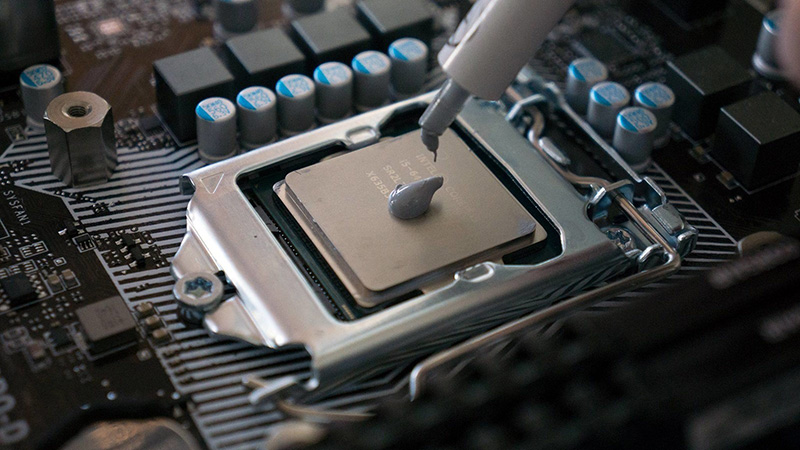
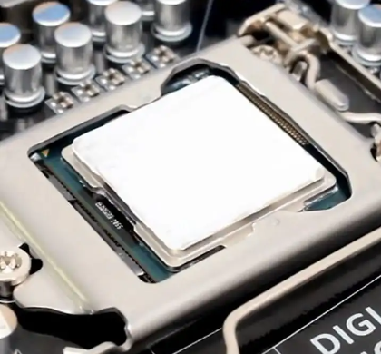

И так, если заводская термопаста на кулере отсутствует, то вам понадобится приобрести её. Лично я использую термопасту MX4, объём берите не менее 8 грамм, так и выгоднее и в дальнейшем пригодится, при апгрейде проца или при снятии кулера после нескольких лет работы её придётся заменить.
Существует великое множество мнений о том как правильно наносить термопасту: кто-то считает что достаточно просто капнуть ей на процессор и придавить кулером, кто-то считает что наносить её нужно крестиком, кругом и другими геометрическими фигурами. Лично мое мнение - нужно капнуть небольшую каплю и размазать её по крышке процессора.
Для обеспечения высокой теплопроводности термопаста должна покрывать всю площадь контакта радиатора и процессора, но вместе с этим её избыточность нежелательна. По-хорошему термопасту наносят максимально возможным тонким слоем.
Выдавливаем небольшую каплю термопасты на крышку процессора
Воспользовавшись специальной лопаткой, либо пластиковой картой равномерным тонким слоем распределяем термопасту по процессору. Хотя лично я это делаю просто пальцем.
Готово, можно устанавливать систему охлаждения.